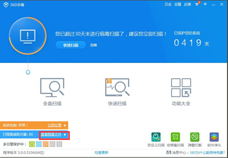
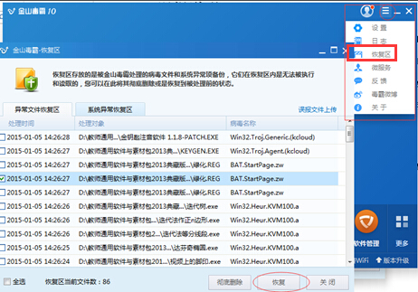
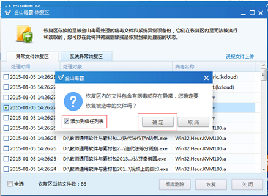
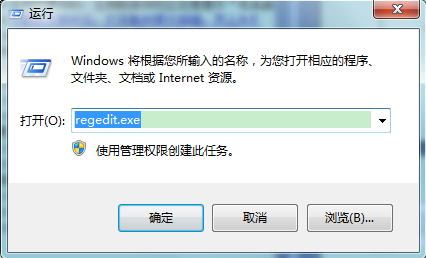
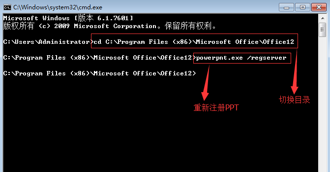
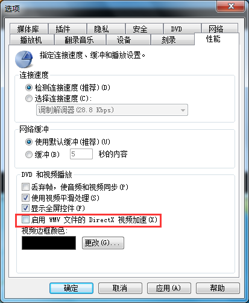
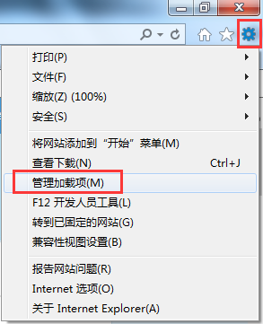
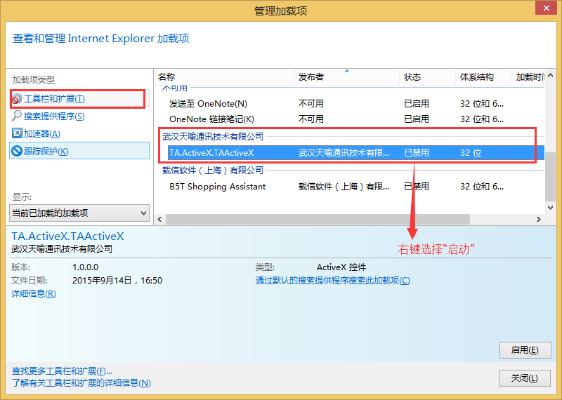
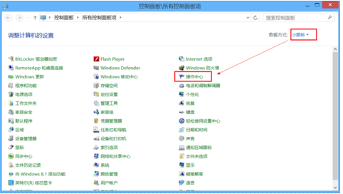
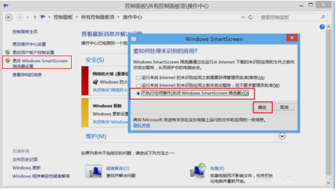

-
- 1.1 如何获得教学助手
- 答：教学助手客户端安装程序可以通过以下两种途径下载：
（1）全国普通用户，可直接登录天喻云官方网站http://www.tianyuyun.cn/，进入应用——教学助手——进入应用，下载客户端。
（2）地方教育云用户，比如武汉教育云用户，可登录武汉教育资源公共服务平台http://www.wuhaneduyun.cn/index.php?r=portal/userlogin/teacher，在”教学助手”中下载客户端。
-
- 1.2 是不是在任意硬件配置的电脑上都可以正常安装使用教学助手？
- 答：为保证软件的正常安装和流畅运行，电脑的硬件配置建议满足如下要求：
（1）CPU：Pentium4 GHz 或更快；
（2）内存：4GB RAM 或更大；
（3）安装和运行最小磁盘空间：2GB；
（4）工作目录建议磁盘空间：20GB；
（5）系统：Windows XP SP3及以上版本。
-
- 1.3 安装软件时，是不是安装在电脑任意一个磁盘中都可以？
- 答：建议将软件安装到非系统盘（如D或E盘），不要安装在C盘。因为在软件使用过程中，下载到本地的课件、资源会占用电脑大量磁盘空间，而C盘是电脑默认且无法更改的系统盘。为了避免系统盘日渐臃肿而影响电脑运行速度及性能，建议将软件安装到C盘以外的磁盘中。
-
- 1.4 如果软件下载后，发现无法安装，可能是什么原因造成的？
- 答：为保证软件的正常安装和流畅使用，安装系统的电脑中需具备如下软件环境：
（1）Microsoft .NET Framework 4.0；
（2）Windows Media Player 11（11.0.5721.5280）或更高版本（播放器更新会进行操作系统正版验证，非正版更新不了Windows Media Player 11）；
（3）Internet Explorer 6.0或更高版本；
（4）Adobe Flash Player 12.0或更高版本。
其中（1）、（4）可以通过”控制面板->程序”->查看是否已经安装及版本信息；检查IE的版本，通过页面的”工具栏”->“关于Internet Explorer”，即可进行查看。检查Windows Media Player的版本，通过程序的”帮助”->“关于Windows Media Player“，即可进行查看。
-
- 1.5 如果安装程序时，提示我不是有效应用程序，怎么办？
- 答：双击安装程序，提示安装程序不是有效的Win32应用程序，是因为安装程序未下载完成的提示，请继续下载安装程序或者重新下载安装程序，待程序全部下载完成后在点击安装即可。
-
- 1.6 如果安装程序时，360杀毒软件将安装程序删除，怎么办？
- 答：您可以尝试打开360杀毒软件，找到隔离区（文件恢复区），找到备授课程序文件，恢复文件，并将文件加入白名单，不再监控，如下图所示：

-
- 1.7 如果安装程序时，金山毒霸杀毒软件将安装程序删除，怎么办？
- 答：您可以尝试打开金山毒霸杀毒软件，找到隔离区（文件恢复区），找到备授课程序文件，恢复文件，并将文件加入白名单，不再监控，如下图所示：


-
- 1.8 软件安装时候，提示setup已停止工作，怎么办？
- 答：这可能由于您的安装目录属于硬盘权限设置导致，您可以尝试更换安装目录到其他硬盘。
-
- 2.1 如何获得登录账号？
- 答：您可以使用武汉教育资源公共服务平台的老师账号直接登录。如果您没有武汉教育资源公共服务平台的账号，您可以登录天喻云平台”http://www.tianyuyun.cn/“，选择区域后，进行账号注册；
（1）点击账号登录框中的”免费注册”；
（2）进入”免费注册”的页面，填写完善相关注册信息，点击”立即注册”；
（3）完成注册信息填写后，即可用此账号登录。
-
- 2.2 在注册账号时，为什么使用邮箱激活账号后收不到激活邮件？
- 答：您可以尝试以下两种方式：
方式一：
（1）确认邮箱地址是否输入正确；
（2）确认邮箱是否能够正常接收邮件；
（3）再次发送激活邮件。
方式二：同时也可以采用手机账号进行账号激活和绑定。
-
- 2.3 账号登录过程中，提示账号不存在，该怎么办？
- 答：登录过程中如果提示”账号不存在”，你可以尝试进行以下操作：
（1）检查账号是否输入正确；
（2）联系我们在线客服QQ：3147516084。
-
- 2.4 教学助手是否在任何情况下都可以正常登录？
- 答：不能。首次登录教学助手系统时必须要连接网络，以便进行本机账号登录认证。
-
- 2.5 登录教学助手时提示账号被冻结，怎么办？
- 答：这种情况可能由您的账号在对应的教育云平台后台被冻结，您可以联系在线客服：QQ：3147516084。
-
- 2.6 登录教学助手时提示网络异常，怎么办？
- 答：这种情况可能由于您的网络环境较差引起，您可以尝试重新点击“登录“或者检查网络设置。
-
- 3.1 添加教材不成功，怎么办？
- 答：添加教材不成功，您可以尝试进行以下操作：
（1）检查网络连接，查看网络连接是否正常；（2）网络连接正常，请重新添加教材；
如果以上操作之后，教材还是不能正常添加，您可以联系在线客服QQ：3147516084来尝试解决。
-
- 3.2 我的书架里面没有教材，怎么办？
- 答：您的书架里没有书，可能您还未进行教材下载，您可以前往书城下载您所需的教材。
-
- 3.3 下载数字教材后，打开教材提示报错，怎么办？
- 答：尝试重新下载数字教材，然后再打开。
-
- 4.1 在打开部分我的资源、课件或者导学时，为什么速度慢？
- 答：部分我的资源、课件、导学是由网络云盘收藏过来，需要先下载然后再打开，速度慢可能有以下原因：
（1）网络速度慢或硬件配置不够高，请在下载完成前不要进行其他操作，耐心等待下载完成；
（2）部分教材、视频、动画类资源及课件较大，请在下载完成前不要进行其他操作，耐心等待下载完成。
-
- 4.2 在教学助手中发布的共享导学、资源、课件，哪些人可以看到？
- 答：您在分享会选择分享区域，可以给学校、区域或所有用户，您选择哪个区域，对应此区域的用户可以看到您分享的导学、资源或课件。
-
- 4.3 在收藏精品或者共享的资源、导学、课件后，为什么找不到了？
- 答：找不到的原因可能有以下几种：
原因1：资源、导学、课件未收藏成功；
原因2：资源、导学、课件收藏成功后，会自动保存在教材对应的章节目录下。选择”我的资源”、 ”我的导学”、”我的课件”，点击左侧”对应章节目录”或”全部章节目录”查看已收藏的资源、导学和课件。
-
- 4.4 我分享资源、导学、课件或习题后，还能再编辑吗？
- 答：可以编辑的，已分享的资源、导学、课件或习题再编辑后，只更新本地数据，不影响之前已共享的资源、导学、课件或习题。
-
- 4.5 我分享资源、导学、课件或习题后，还能删除吗？
- 答：可以删除的，将已经分享的资源、导学、课件或者习题删除，只删除本地数据，不影响之前已共享的资源、导学、课件或习题。
-
- 4.6 我的课件上传失败，我怎么办？
- 答：我的课件上传过程中提示网络异常，您尝试找到教学助手安装目录下Users文件夹，例如：C:\Program Files (x86)\教学助手\Users，在里面将edux格式的课件拷贝出来。
-
- 4.7 编辑完视频资源后，上传资源时出现网络异常提示，我怎么办？
- 答：您可以尝试通过以下操作：
1. 检查网络连接是否正常；
2. 尝试将教师助手卸载，然后再将教学助手安装在硬盘根目录下，例如C: \，D:\，E:\，F:\；
如果通过两种方式还不能解决问题，请尝试联系在线客服QQ：3147516084来解决。
-
- 5.1 我新建导学、习题和作业时，提示我未加入学校，怎么办？
- 答：您需要在”个人中心”-“我的空间”进入教育云平台的空间，然后申请加入学校，并联系学校管理员，审核通过后，您就可以新建导学、习题和作业。
-
- 5.2 我将制作好的导学、习题、作业推送给学生时，一直提示我没有选择班级，怎么办？
- 答：您需要在”个人中心”-“我的空间”进入教育云平台的空间，然后选择加入班级，加入班级通过后，您再推送导学、习题、作业就可以选择您需要推送的班级了。
-
- 6.1 我的电脑安装了WPS抢鲜版，在课件编辑界面不能插入PPT?
- 答：如果电脑安装了金山WPS抢鲜版，请尝试以下两种方法：
第一种方法：下载WPS官方版本，并进行程序覆盖安装；
第二种方法：卸载WPS抢鲜版，恢复Microsoft Office PowerPoint 2003及以上版本的软件运行：
（1）卸载WPS抢鲜版；
（2）开始——运行——输入regedit.exe进入注册表，并同时删除注册表项HKEY_CLASSES_ROOT\CLSID\{91493441-5A91-11CF-8700-00AA0060263B}和HKEY
CLASSES_ROOT\TypeLib\{91493440-5A91-11CF-8700-00AA0060263B}；

（3）在Office安装目录中找到POWERPNT.EXE文件路径，复制或者记住此路径；
（4）开始——运行——输入cmd，在cmd面板中如下图输入路径，然后再执行powerpnt.exe /regserver，就会开始PPT重新注册，等待操作完成即可；

（5）如果步骤4完成后还是不行，请卸载Office软件并重新安装，再执行步骤2到步骤4。
-
- 6.2 播放有些视频资源时，提示报错，怎么办？
- 答：高分辨率的视频播放对硬件要求较高，建议您尝试以下操作：
打开Windows Media Player，右键点击播放器任意地方，在弹出的菜单中，选择‘更多选项’，进入选项设置面板，选中‘性能’选项卡，取消下图中红框部分的勾选：

如果以上操作之后，视频还是不能播放，请您直接联系”在线客服：3147516084”来尝试解决。
-
- 6.3 在课件中插入动画时，出现报错，怎么办？
- 答：可能是因为电脑未安装Adobe Flash Player控件引起的动画不能正常加载，可以尝试安装Adobe Flash Player 12.0或更高版本。
-
- 6.4 编辑课件时，为什么有些格式的文件无法插入到课件中？
- 答：备授课系统目前支持大多常见的文件格式，具体包括：
（1）视频文件：支持*.avi、*.flv、*.mp4、*.mpeg、*.mkv、*.mov、*.rmvb、*.wmv和*.3gp；
（2）动画文件：支持*.swf；
（3）图片文件：支持*.jpg、*.png、*.gif和*.bmp；
（4）文档文件：支持*.doc、*.docx、*.xls、*.xlsx、*.pdf、*.ppt、*.pptx、*.pps和*.ppsx；
（5）音频文件：*.mp3、*.wav和*.wma格式。
随着系统的不断升级，会支持更多格式的文件。
-
- 6.5 我怎么将电脑上编辑好的PPT文档导入到教学助手中进行二次编辑？
- 答：您可以在教学助手的同步备课”课件编辑器”中使用”插入文件”功能，选择需要导入的PPT；插入完成之后，可以进入PPT的二次编辑和放映状态。
-
- 6.6 我收藏部分精品课件，但是其中的视频不能播放，怎么办？
- 答：高分辨率的视频播放对硬件要求较高，建议您尝试以下操作：
（1）不要反复点击播放按钮；
（2）关闭电脑其他应用程序；
（3）退出客户端，重新进入客户端；
如果以上操作之后，视频还是不能播放，请您直接联系”在线客服QQ：3147516084”来尝试解决。
-
- 7.1 我不能正常导入PPT课件进行授课，怎么办？
- 答：如果遇到此类情况请做以下排查：
（1）确认电脑已经安装了Microsoft Office PowerPoint 2003及以上版本的软件；
（2）确认安装的Microsoft Office PowerPoint 2003及以上版本的软件运行正常。
-
- 7.2 我使用edux格式的课件，进行授课时，点击页面不能进行切换？
- 答： 可能是因为电脑未安装Adobe Flash Player控件引起，可以尝试安装Adobe Flash Player 12.0或更高版本。
-
- 7.3 打开互动课堂后，学生平板找不到教室，怎么办？
- 答：您可以尝试做以下检查：
（1）学生平板是否正常连接网络；
（2）学生平板连接的网络是否与教室PC连接同一个局域网WIFI。
-
- 7.4 我使用移动讲台时，找不到课堂，怎么办？
- 答：您可以尝试做以下检查：
（1）手机是否正常连接网络；
（2）手机连接的网络是否与教室PC连接同一个局域网WIFI。
-
- 7.5 学生使用答题器没有响应，怎么办？
- 答：您可以尝试做以下操作来解决问题：
（1）检查管理学生的界面是否有对应答题器编号；
（2）检查红外接收器是否正常连接；
（3）在教师PC端任务管理器关闭进程”Hidstream.exe”后，在重新插入红外接收器。
-
- 7.6 我的手写笔书写时无反应，怎么办？
- 答：您可以尝试将做以下操作来解决问题：
（1）检查手写笔蓝牙配对是否成功；
（2）重新进入互动课堂；
（3）在教师PC端任务管理器关闭进程”Hidstream.exe”后，重启手写笔。
-
- 7.7 互动课堂中的习题，我该怎么添加和编辑？
- 答：可以在教学助手——随堂检测——我的习题中新建和编辑，然后在互动课堂中进行选择。
-
- 8.1 在”工作空间”没有看到教学助手，怎么办？
- 答：您登录教育云平台之后，在”工作空间”中看到我的课程，就是教学助手的web版。
-
- 8.2 我可以使用哪些浏览器，通过”我的课程”来启动教学助手客户端？
- 答：目前网页启动备授课系统，因启动控件使用IE内核技术，所以暂时只支持IE内核浏览器，例如IE10及以上版本、360安全浏览器等。
-
- 8.3 已经安装了客户端，在我的课程使用制作微课模块时，提示我未安装客户端，怎么办？
- 答：出现这种情况可能有两种原因：
第一种，首次安装完成客户端，需要重新启动网页，才能正常启动客户端；
第二种，可能是在启动网页时，禁用了启动控件，您可以尝试以下操作，启用教学助手系统的控件：
第一步，在IE浏览器找到”工具”选项，选择”管理加载项”，打开管理加载项界面，如下图所示：

第二步，在”加载项类型”中”工具栏和扩展”找到备授课系统的控件，选中控件将控件启用，然后重新刷新网页即可。

-
- 8.4 在”我的课程”中下载客户端时候，提示”Windows已保护你的电脑”，怎么办？
- 答：您可以尝试以下操作：
第一步，打开控制面板,查看方式——选择小图标——选择”操作中心”，如下图：

第二步，选择”更改windows smartscreen筛选器设置”，选择第三项不执行任何操作（关闭windows smartscreen筛选器），点击”确认”即可，如下图所示：

-
- 8.5 学生在课前导学中的视频资源，不能正常打开，怎么办？
- 答：学生找到导学视频内容后，下载到本地进行播放。
-
- 9.1 安装教学助手系统后，能否进行系统版本的自动更新？
- 答：可以。每次客户端启动时均检测是否有新版本，如有新版本发布，则系统会提示进行版本更新。
-
- 9.2 手动安装新版教学助手系统后，为什么我的资源、导学及课件都找不到了？
- 答：为保存资源数据不丢失，手动更新时，系统会自动查找原有版本的安装目录，此时请直接将新版本进行覆盖安装即可，请切记不要修改安装目录，以保证新版本和原有版本安装路径保持一致，以免造成数据丢失。
-
- 9.3 取消升级之后，还能升级吗？
- 答：可以，您可以尝试点击”系统设置->检查更新”中，检测是否有新的版本，如果有新版本，可以立即更新来完成客户端的升级。